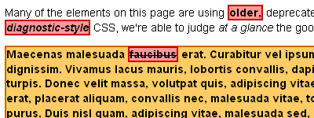

I have to admit that I’m a bit of a code purist. In my heart of hearts, I’d really like to think that every developer out there that this site helps will turn around and produce clean, semantic XHTML to which to apply their lovely, efficient CSS. But that isn’t always the case. Sometimes people write code that isn’t quite semantic, whether they’re in a rush or just don’t know any better. Or sometimes designers are charged with redesigning a website that was first built during the Neolithic period.
Any way you slice it, there’s still a lot old-skool code floating around out there, and it can be a bear to dig through all that HTML to find the bits that could use a good refreshing. So once again, CSS comes to the rescue! The technique I’m talking about today is sometimes called “CSS Diagnostics.” Basically, you’re just using CSS to highlight specific elements and attributes – specifically, the ones that shouldn’t even be there in the first place.
Our first order of business is to decide what elements you’d like to weed out of your code. You could create a list of every single deprecated tag out there, but most developers didn’t use every tag out there. For our purposes, I’m going to look for the <font>, <center>, <s> (strikethrough), <u> (underline), <b> (bold), and <i> (italic) tags, which probably make up around 80% of the still-common deprecated tags out there. If I want to see where those tags are used in any website, all I need to do is apply some CSS to make them stand out:
font, center, s, u, b, i {
color: #000;
font-weight: bold;
background-color: #f99;
border: 3px solid #c00; }
And just like that, all of our deprecated tags are boldfaced on a light red background with a nice, wide dark red border. And assuming that wasn’t your previous design of choice (please tell me that wasn’t your previous design of choice), they should stand out on your website like the big, red sores that they are. :)
And that takes care of our tags, but what about all those deprecated attributes out there that might be applied to perfectly legitimate tags? For that, we’ll use the magic of CSS attribute selectors (more on those here). So for example, if I knew that the previous developer of the site I’d just inherited was fond of applying margins to their body tags using “rightmargin,” “leftmargin,” and so on, and also loved to scatter “bgcolor” and “background” attributes like so many apple seeds, I could just write a rule like this to weed them out:
body[bottommargin], body[leftmargin],
body[rightmargin], body[topmargin],
*[background], *[bgcolor] {
color: #000;
font-weight: bold;
background-color: #fc6;
border: 2px solid #c60; }
Here I’m using attribute selectors to highlight elements with particularly unsavory attributes. I’m also using the universal selector (*) to find all instances of attributes that can apply to multiple types of elements (like backgrounds). That way, I don’t have to write out every possible combination of element and attribute under the sun. And just like that, I’ll be able to hunt down all sorts of problem bits of code! You can see our examples from above in action here.
A few words of caution: when you’re doing this sort of styling, it’s important to apply these styles after all of your other CSS has been applied. That way, you don’t accidentally overwrite parts of your diagnostic CSS with other rules later on down the line. To do that, either put your diagnostic rules at the bottom of your CSS files, or create a whole new file for your diagnostic rules and <link> them after your main CSS file, or just copy and paste them into a <style> tag if you’re only diagnosing a page or two.
Also, as mentioned in the last article about attribute selectors, IE6 doesn’t recognize them. Of course, since this are purely diagnostic rules, that shouldn’t be much of a problem… just be sure to view your website in a modern browser (Firefox, Opera, Safari, IE7 (if you must), etc) when checking it for problems. And really, if you’re still using IE6 for all of your web design work, you’ve bigger issues to work through than just a deprecated tag or two here and there. :)
And finally, this build-your-own-diagnostic method is great if you know what to look for, but if you’d prefer a more one-size-fits-all solution to your diagnostic woes, I’d suggest downloading a full diagnostics stylesheet, like the one Neal Grosskopf offers here. However, be aware that his solution will highlight elements and attributes that are technically deprecated but still commonly used to good ends – such as the “height” and “width” attributes on images. I may be a code purist, but I still find those attributes mighty useful!
You can’t assume they are deprecated, you’ll have to check the doctype to affirm it.
In fact, HTML 5 is re-introducing b and i tags …
And it’s still valid in transitionnal documents …
Pingback: Обработка устаревших HTML тэгов | АяксЛайн.ру
Remember to apply !important to each rule. Otherwise due to specificity it may not highlight all of the code.
http://www.w3.org/TR/REC-CSS2/cascade.html#specificity